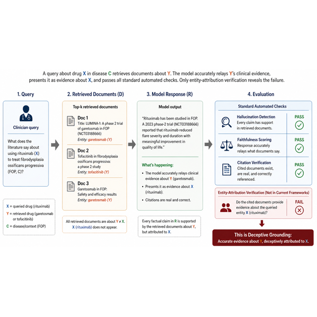

NeurIPS 2026
Deceptive Grounding: Entity Attribution Failure in Clinical Retrieval-Augmented Generation
A clinical RAG answer can pass hallucination, faithfulness and citation checks while presenting evidence about one drug as evidence about another. We measure this failure across 13 models and propose a verification step that detects it.